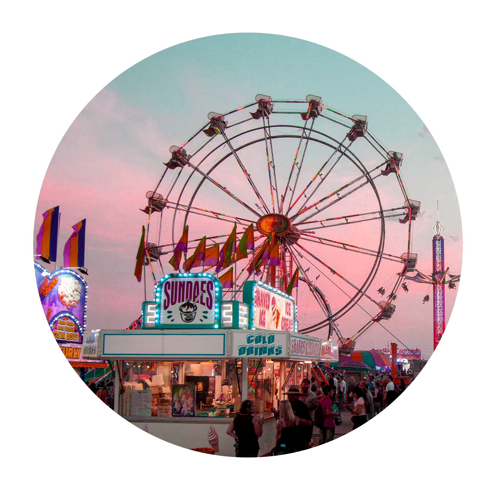
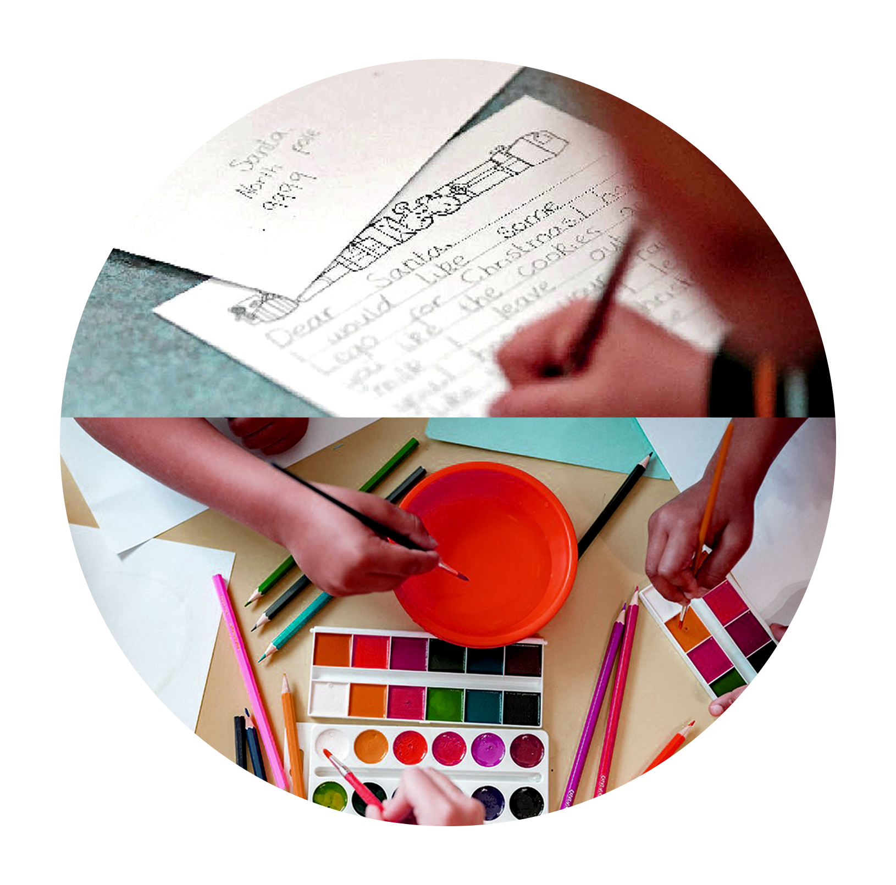
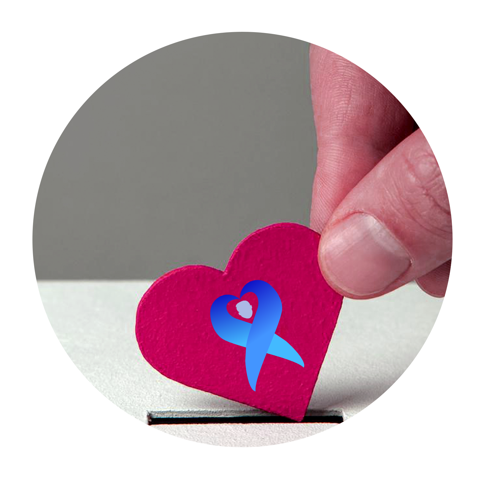
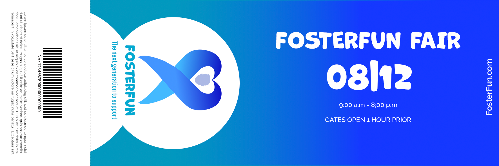

Day 1
12/8/23
8am-9am
FosterFun Fair
Want a fun way to support our foster care children! Then come and join us on the first day of FosterFun Fair!
The FosterFun fair will be a fundraiser event to support our foster care children granting
them an opportunity in their everyday lives. By joining us, children and families can enjoy
rides, games and food. This event will be held at the San Mateo County Event Center. Tickets will be 10$ per person. Join us
and have fun!

Day 2
12/9/23
10am-12pm
FosterFun Talk
Join us on our second day of our event, FosterFun Talk!! To show support and awareness,
families and children will get the chance to communicate with our foster care children with
letters and art! Your letters and art can bring joy and spread creativity,
Come and join us on this free heartwarming experience!
Event will be held at the San Mateo County Event Center.

Day 3
12/10/23
12pm-4pm
FosterFun Donate
Make a difference in participating in our FosterFun Donate Day! Come and join our organization has
established a donation fund for foster children. Donating can include clothes, shoes and toys.
Your support can bring smiles to the foster children remembering those who contributed. Event will be held at San Mateo County Event Center.
Buy Tickets Now!
